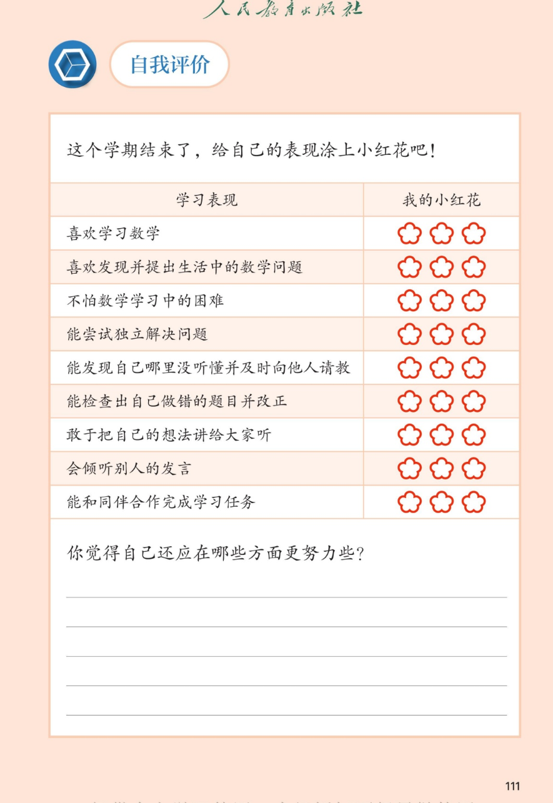

孩子学完一年级数学上册，应该"会什么、能什么"？——写给爸爸妈妈的一份对照说明

能认、读、写 0~20 各数，理解数的顺序和大小（会用"＞、＜、＝"比较）；理解数的组成（如 13 是 1 个十和 3 个一）；初步体会位值思想——同样的数字"1"，在 11 和 10 中意思不一样。
理解加法是"合起来"、减法是"去掉或比较"；熟练完成 10以内加减法（脱口而出）和 20以内进位加法（会用"凑十法"）；知道加法和减法互为逆运算（一部分＋另一部分＝整体，整体－一部分＝另一部分）。
能辨认 长方体、正方体、圆柱、球 四种立体图形，说出各自的特点（如球四面八方滚、圆柱既能滚又能堆）；能用图形拼搭，体会"平放稳、下大上小高"等简单规律。
能从图和情境中发现并提出数学问题；理解整体与部分的关系（一图四式）；能解决逆向求原来（领走＋剩下＝原来）和简单排队位置问题（之间、从…到…、别忘自己）；会用画图帮助思考。
面对情境图能主动提出"一共有几个""谁比谁多"这样的数学问题——这是创新意识的萌芽，教材每单元的"你发现了什么"都在培养它。
遇到不会的题先自己想一想、画一画，再求助——一年级要建立的最重要的学习品质。画图是这一学期反复出现的"思维拐杖"。
能发现做错的题目并改正——错题不是坏事，改对一道错题比做对三道新题更有价值。这是自我监控能力的起点。
敢于把自己的想法讲给大家听，也能耐心听别人的方法——同一道题往往有多种解法（如 8＋9 两种凑法、5＋8 交换法），交流让思维更灵活。
背后目标：学习兴趣与自信心。这是所有目标的前提。
家长观察：孩子是否主动玩数学游戏（教材里的得数涂色藏画、找13）、主动数东西？兴趣比正确率重要。
家长帮助：多说"你是怎么想到的"，少说"这么简单都不会"。保护好奇心就是保护数学。
背后目标：应用意识与问题意识——能把生活情境"翻译"成数学语言。
家长观察：电梯里数楼层、吃饭时分水果，孩子会不会主动说出"一共""还剩""多几个"？
家长帮助：故意留问题给孩子："买了6个苹果，吃掉2个，你来提问考考我。"
背后目标：学习意志力与抗挫折能力（数学品格的核心）。
家长观察：遇到难题的第一反应是"我不会"放弃，还是"让我试试画个图"？
家长帮助：孩子卡住时先问"题目说了什么？你能画出来吗？"——教方法，不直接给答案。
背后目标：独立思考能力。教材"阅读理解→分析解答→回顾反思"三步法就是教孩子按步骤独立解题。
家长观察：做应用题时是先自己读完、圈出信息，还是立刻喊"妈妈这题怎么做"？
家长帮助：把"三步"变成口头禅：先"读"——题目讲了什么？再"想"——用什么方法？最后"查"——回头看看对不对。
背后目标：自我觉察（元认知）与求助能力——知道自己"哪里不会"是会学习的标志。
家长观察：孩子能否说出"我凑十法会了，但逆向题搞不清谁加谁"？
家长帮助：睡前聊两句"今天数学学了什么？哪一题最有意思？哪一题还没弄明白？"——把"没听懂"变成可以聊的事。
背后目标：反思与自我纠错能力——"回顾反思"正是三步解题法的最后一步。
家长观察：作业发下来，孩子是只看分数，还是主动看错在哪、重做一遍？
家长帮助：建议一个"错题本"：把错题抄下来（或剪贴），订正后在旁边写/画一句"我错在……"。一年级由家长代笔也可以。
背后目标：数学表达与自信心。能"说清算理"（比如完整说出"9加4，把4拆成1和3，9加1得10，10加3得13"）代表真正理解了。
家长观察：孩子做题后能否当小老师讲给您听？讲得清＝真会了。
家长帮助：每周一次"孩子当老师"：让他挑一道最拿手的题讲给您听，您故意"装不懂"提问。
背后目标：倾听与理解他人的能力——数学交流的一半是"听懂别人的方法"。
家长观察：别人讲一种不同的算法时，孩子是急着打断，还是能听完并说出"你的方法是先……"。
家长帮助：家庭讨论时立个小规矩：一人说完再说。也可以问"爸爸的算法和你的不一样，哪里不一样？"
背后目标：合作与分工意识——教材中的"我说你猜""我说你搭""数学游戏"都需要两人配合。
家长观察：和小伙伴玩数学游戏时，能否遵守规则、轮流进行？
家长帮助：在家玩"我说你拿"：您说"请把圆柱形的东西拿来"，孩子去找——一人出题一人答，正好复刻课堂游戏。
买东西算钱（20以内加减）→ 分东西说组成（数的分与合）→ 收拾玩具认形状（立体图形）。每天任选一件，5分钟即可。
计时做10道口算，全对后挑2道让孩子说算理："这道题你是怎么算的？"——说得清的才是真会的。
出一道文字题（如"车上有9人，下来3人，又上来5人，现在几人？"），让孩子画图再列式。画图是整个上册最核心的思维方法。
错题一起分析："是没看清、不会算，还是不理解题意？"三类原因三种对策。多比进步、少比别人。